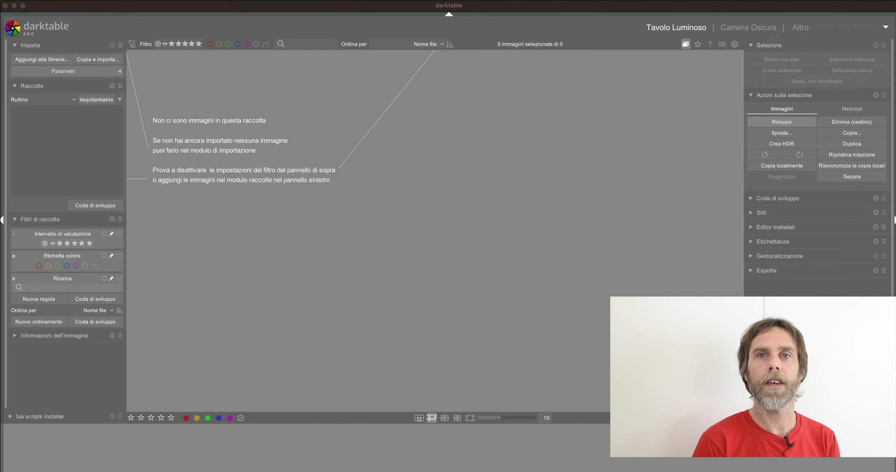

Importazione e Organizzazione¶
Il processo di post-produzione non inizia con la manipolazione dei pixel, ma con l'organizzazione strategica degli asset digitali. darktable non è solo un editor: è un sistema DAM (Digital Asset Management) che opera in modo non distruttivo tramite un database SQLite e file XMP sidecar.
Importazione: copia vs. aggiunta¶
Hai due opzioni fondamentali:
darktable copia i file dalla sorgente (scheda SD, cartella temporanea) nella directory di destinazione. Consigliato per il flusso da fotocamera.
darktable indicizza i file nella posizione corrente, senza spostarli. Consigliato quando i file sono già organizzati.
Percorsi di rete
Se usi un NAS, darktable indicizza il percorso completo nel database: se il punto di mount cambia, perdi il collegamento. Usa percorsi stabili.2
Struttura consigliata delle directory¶
Foto/
├── 2026/
│ ├── 01_Praga/
│ ├── 03_Ritratti_Studio/
│ └── 04_Matrimonio_Rossi/
└── 2025/
└── ...
Il formato YYYY/MM_NomeEvento permette l'ordinamento cronologico naturale e la leggibilità immediata.
La struttura dei file e il flusso di importazione sono documentati nel manuale ufficiale nella sezione Overview > Lighttable > Import.1
Il modulo import: funzionalità e flusso operativo¶
Il modulo import, accessibile nella vista Lighttable, è il punto di ingresso obbligato per ogni immagine che entra nel flusso di lavoro. Non è un semplice dialogo di selezione file: è un sistema integrato di gestione del ciclo di vita iniziale dell’asset, con tre modalità operative distinte, ciascuna con comportamenti specifici riguardo a copia, metadata, XMP e persistenza dei dati.
Flusso di lavoro completo del modulo import¶
- Apertura del modulo: clicca su Import nella barra laterale sinistra della vista Lighttable o premi
Ctrl+I. - Selezione della modalità: scegli tra:
add to librarycopy & importcopy & import from camera(solo se rilevata una fotocamera compatibile)- Configurazione del dialogo: personalizza i parametri di destinazione, naming e metadata.
- Selezione file/folder: naviga nelle cartelle, filtra con
recursive directoryoignore JPEG images, visualizza anteprime con l’icona occhio . - Esecuzione: conferma con Import (tasto Invio o pulsante in basso a destra).

Le tre modalità di importazione — dettagli tecnici¶
| Modalità | Copia fisica? | Legge XMP esistenti? | Genera nuovo XMP? | Aggiorna DB con Exif? | Note chiave |
|---|---|---|---|---|---|
add to library |
❌ No | ✅ Sì (.xmp, *.xmp, *_1.xmp) |
✅ Sì (se non esiste) | ✅ Sì | I file devono essere accessibili al momento dell’import; nessun trasferimento. |
copy & import |
✅ Sì (da filesystem locale/mounted) | ❌ No (ignora XMP esistenti) | ✅ Sì (XMP nuovo, nome standard file.ext.xmp) |
✅ Sì | Utile per normalizzare la struttura di archiviazione. |
copy & import from camera |
✅ Sì (da fotocamera USB/MTP) | ❌ No | ✅ Sì | ✅ Sì | Richiede che la fotocamera sia unmounted da altri processi prima di avviare darktable4. |
Importazione da fotocamera: workflow ottimale
- Disconnetti la fotocamera da altri software (es. Nautilus/Gnome Files).
- In darktable, clicca scan for devices.
- Seleziona la fotocamera → clicca mount camera.
- Verifica il modello e firmware nel tooltip (es.
"Canon EOS R6 Mark II / Firmware 1.4.0"). - Usa copy & import from camera: i file vengono copiati con timestamp di scatto (
$(EXIF_YEAR)ecc.), non di importazione5.
Parametri del modulo import¶
Tutti i parametri sono persistenti tra sessioni e possono essere salvati come preset del modulo.
Parametri principali¶
| Nome parametro | Descrizione | Valore default | Range/Formato | Note |
|---|---|---|---|---|
ignore exif rating |
Ignora il rating Exif (es. da Lightroom) e usa initial rating |
off |
boolean | Abilita questa opzione se vuoi sovrascrivere rating esterni con un valore uniforme. |
initial rating |
Rating in stelle assegnato automaticamente a tutte le immagini importate | 1 |
0–5 intero |
darktable assegna sempre 1 star per default alle nuove immagini5. |
apply metadata |
Attiva l’applicazione automatica di metadati predefiniti | off |
boolean | Quando attivato, mostra i campi visibili del metadata editor. |
metadata |
Campi metadati da applicare (autore, copyright, descrizione, ecc.) | vuoto | testo libero o preset | Supporta variabili come $(USERNAME) e $(JOBCODE) solo se inserite manualmente nel campo copyright o description (non nativamente nel modulo import, ma in preferences > metadata). |
tags |
Etichette da applicare in blocco a tutti i file importati | vuoto | stringa CSV (es. vacanze,praga,2026) |
I tag vengono salvati nel database e sincronizzati negli XMP. Puoi usare preset salvati nel modulo tagging. |
Parametri avanzati (naming rules)¶
Accessibili espandendo la sezione naming rules nel dialogo copy & import o copy & import from camera. Questi controllano la struttura della destinazione fisica.
| Campo | Descrizione | Default | Variabili supportate | Esempio pratico |
|---|---|---|---|---|
base directory naming pattern |
Cartella radice di destinazione | $(PICTURES_FOLDER)/Darktable |
$(HOME), $(PICTURES_FOLDER), $(DESKTOP), $(USERNAME) |
$(HOME)/Foto/Archivio |
sub directory naming pattern |
Sottocartella per sessione | $(YEAR)$(MONTH)$(DAY)_$(JOBCODE) |
$(YEAR), $(MONTH), $(DAY), $(JOBCODE), $(EXIF_YEAR), $(EXIF_MONTH), $(EXIF_DAY) |
$(EXIF_YEAR)/$(EXIF_MONTH)_$(JOBCODE) → 2026/04_ViaggioPraga_001 |
keep original filename |
Mantiene il nome originale invece del pattern | off |
boolean | Utile per preservare codici produttore (es. IMG_1234.CR3). |
file naming pattern |
Nome file finale | $(YEAR)$(MONTH)$(DAY)_$(SEQUENCE).$(FILE_EXTENSION) |
$(SEQUENCE), $(FILE_NAME), $(FILE_EXTENSION), $(EXIF_ISO), $(ID) |
$(EXIF_YEAR)-$(EXIF_MONTH)-$(EXIF_DAY)_$(SEQUENCE)_ISO$(EXIF_ISO).$(FILE_EXTENSION) → 2026-04-15_001_ISO400.CR3 |
override today’s date |
Sovrascrive data/ora di importazione con data Exif o personalizzata | vuoto | YYYY-MM-DD[Thh:mm:ss] |
2026-04-15T14:30:00 → tutte le variabili $(YEAR) ecc. usano questa data, non quella di import. |
Variabili $(EXIF_*): uso critico
Le variabili $(EXIF_YEAR), $(EXIF_MONTH), $(EXIF_DAY) funzionano solo se il file contiene dati Exif validi. RAW da fotocamere recenti li includono sempre; JPEG da smartphone potrebbero non averli o avere timestamp errati. Verifica con exiftool -G1 file.cr3 \| grep "Date\|Time" prima di affidarti a questi pattern6.
Cernita (Culling): metodo strutturato e ottimizzato¶
La cernita è il passaggio più sottovalutato del flusso di lavoro, eppure è quello che ha il maggiore impatto sulla produttività. Un metodo disciplinato di selezione ti risparmia ore di editing su foto mediocri.3
Passaggio 1: Scarto rapido (Reject)¶
Entra in modalità culling premendo X nel tavolo luminoso. Scorri velocemente tutte le immagini. Per ogni foto, fai zoom con ++ctrl+wheel++ per verificare la nitidezza. Scarta con R (Reject) tutte le foto fuori fuoco, mosse o con errori tecnici irrecuperabili.
Passaggio 2: Selezione iniziale (1 stella)¶
Secondo passaggio più lento. Guarda composizione, luce, soggetto. Premi 1 per assegnare una stella alle foto che hanno potenziale. Non devi decidere se sono «grandi foto»: basta che abbiano qualcosa di interessante.
Passaggio 3: Raffinamento (2-3 stelle)¶
Lavora solo sulle foto a 1 stella, usando il filtro del tavolo luminoso. Confrontale tra loro con la vista di confronto (X). Promuovi a 2 o 3 stelle quelle che meritano l'editing.
Passaggio 4: Eccellenza (4-5 stelle)¶
Dopo l'editing, assegna 4 stelle alle foto destinate alla pubblicazione e 5 stelle ai master di portfolio. Le etichette colore aggiungono un livello semantico (es. rosso = «da ri-editare», verde = «approvata dal cliente»).
Workflow alternativo ottimizzato (basato sul manuale ufficiale)¶
Il manuale darktable 4.8 propone un flusso incrementale filtrato, particolarmente efficace per grandi batch:
- Imposta il filtro View in alto a destra su
Rating = 1 star.
→ Mostra solo le immagini appena importate (poichéinitial rating = 1è il default)5. - Scorri e premi
R(reject) o0per scartare; premi2per promuovere. Le foto con rating ≠ 1 spariranno automaticamente. - Cambia filtro in
Rating = 2 stars. Ripeti:3per promuovere,1per retrocedere. - Cambia filtro in
Rating = 3 stars. Entra in darkroom per prove rapide di sviluppo (crop, esposizione base). Se soddisfatto, premi4. - Filtra
Rating = 4 stars. Completa l’editing, esporta, quindi assegna5.
Questo approccio riduce drasticamente il carico cognitivo: lavori sempre su un insieme piccolo e omogeneo, con obiettivi chiari per ogni fase9.
Attenzione alla cancellazione definitiva
Se lo spazio è critico, puoi eliminare permanentemente le immagini con rating 0 o rejected selezionandole e usando trash/delete nel modulo actions on selection.
Attenzione: questa azione elimina fisicamente i file dal disco e non può essere annullata. È sicura solo se hai un backup verificato (es. rsync su NAS o backup su cloud)9.
Migrazione da Lightroom: importazione intelligente degli XMP¶
darktable supporta nativamente l’importazione di file XMP generati da Lightroom, consentendo il recupero parziale del lavoro già fatto.
Compatibilità XMP Lightroom¶
Durante l’add to library, darktable cerca automaticamente file XMP con nome <basename>.xmp (formato Lightroom) e li legge, senza sovrascriverli7. Vengono caricati:
- Tag (anche gerarchici, es.
Luoghi > Italia > Roma) - Etichette colore (rosso, giallo, verde…)
- Rating (stelle)
- Coordinate GPS
Una volta importato, darktable genera un proprio XMP secondario (<basename>.xmp o <basename>_1.xmp) per memorizzare le modifiche future, mantenendo intatto l’originale Lightroom.
Conversione automatica dei moduli di sviluppo¶
All’ingresso in darkroom, se rileva un XMP Lightroom compatibile, darktable converte automaticamente alcune impostazioni nei propri moduli equivalenti:
| Impostazione Lightroom | Modulo darktable corrispondente | Accuratezza di conversione | Note |
|---|---|---|---|
| Crop & Rotate | crop and rotate |
✅ Alta | Angoli e proporzioni preservati. |
| Exposure | exposure |
✅ Alta | Baseline exposure + black level. |
| Contrast / Clarity | local contrast |
⚠️ Media | Effetto simile, ma algoritmo diverso (non è “clarity” pura). |
| Tone Curve (parametric) | tone curve |
✅ Alta | Punti chiave mappati fedelmente. |
| HSL (Hue/Saturation/Luminance) | color zones |
⚠️ Media | Mappatura approssimata su 3 bande (shadow/midtone/highlight); richiede affinamento manuale. |
| Split Toning | split-toning |
✅ Alta | Bilanciamento tonale preservato. |
| Grain | grain |
✅ Alta | Intensità e dimensione convertite con buona fedeltà. |
| Spot Removal | spot removal |
✅ Alta | Posizione e dimensione dei cerchi riprodotte esattamente. |
| Vignetting | vignetting |
✅ Alta | Intensità e forma replicate. |
Limitazioni critiche della migrazione
- Nessuna conversione per: Lens Corrections, Detail (Sharpening/Noise Reduction), Calibration, Presets complessi.
- I profili colore (Adobe RGB, ProPhoto RGB) non vengono interpretati: darktable usa sempre il suo spazio di lavoro
RGB (Rec709)oRGB (Linear Adobe RGB)a seconda della configurazione. - Le maschere locali (radiali, lineari, pennelli) non sono supportate e vengono ignorate7.
Consigli operativi per utenti migrati da Lightroom/Photoshop¶
✅ Best practice consolidate¶
- Usa
copy & importper nuovi scatti, maiadd to librarydirettamente dalla scheda SD: evita rotture di percorso e garantisce coerenza strutturale. - Abilita sempre
create XMP filesinpreferences > storage: è l’unica garanzia di portabilità e interoperabilità con altri software (es. RawTherapee, DigiKam)8. - Imposta
initial rating = 0se preferisci partire da zero: molti professionisti usano0per “da valutare”,1per “scartabile ma conservato”,2+per “potenziale”. - Personalizza i naming pattern per allinearti al tuo flusso:
base directory:$(HOME)/Foto/RAW
sub directory:$(EXIF_YEAR)/$(EXIF_MONTH)_$(JOBCODE)
file naming:$(EXIF_YEAR)$(EXIF_MONTH)$(EXIF_DAY)_$(JOBCODE)_$(SEQUENCE).$(FILE_EXTENSION)
⚠️ Trappole comuni da evitare¶
- Non usare
recursive directorysu cartelle con >500 file: causa rallentamenti severi nel generare le anteprime in cache. Importa per evento o giornata5. - Non abilitare
ignore JPEG imagesse lavori in RAW+JPEG: darktable importerà entrambi, ma puoi filtrare in seguito confilm rollometadata(es.format = CR3). - Non modificare manualmente i file XMP esterni durante una sessione attiva: darktable potrebbe sovrascriverli al salvataggio. Usa sempre l’interfaccia o il modulo metadata editor.
🛠 Esempio pratico: setup per fotografo di matrimonio¶
-
Prima dell’evento:
Inpreferences > import, imposta:
base directory naming pattern→$(HOME)/Foto/Matrimoni
sub directory naming pattern→$(EXIF_YEAR)/$(EXIF_YEAR)-$(EXIF_MONTH)-$(EXIF_DAY)_$(JOBCODE)
file naming pattern→$(JOBCODE)_$(SEQUENCE).$(FILE_EXTENSION)
initial rating→0 -
Post-evento:
Collega la scheda SD →copy & import→ inserisciJOBCODE = Rossi_20260415
Risultato:/home/utente/Foto/Matrimoni/2026/2026-04-15_Rossi_20260415/Rossi_20260415_001.CR3 -
Cernita:
FiltraRating = 0→ scarta conR→ promuovi con1→ filtraRating = 1→ confronta conx→ promuovi con2→ ecc.
Risorse¶
- darktable User Manual — Import & Review (v4.8)
- darktable User Manual — Module Reference: import (v4.8)
- darktable User Manual — Preferences: Import (v4.8)
- darktable User Manual — Sidecar Files Import (v4.8)
- darktable FR — Importer des photos avec darktable 4.2.0 (video tutorial in francese)
Fonti¶
-
darktable User Manual -- Overview, docs.darktable.org | Copia locale:
processed/darktable-usermanual-en/usermanual-48-en-overview.md↩ -
darktable 5.4 NEW UPDATE -- A Dabble in Photography ↩
-
Piero Vera, Darktable editing workflow: scene-referred update -- Sezione culling dettagliata con screenshot ↩
-
darktable 4.8 user manual — import & review, docs.darktable.org/usermanual/4.8/en/overview/workflow/import-review/ ↩
-
darktable 4.8 user manual — module reference: import, docs.darktable.org/usermanual/4.8/en/module-reference/utility-modules/lighttable/import/ ↩↩↩↩
-
darktable 4.8 user manual — preferences: import, docs.darktable.org/usermanual/4.8/en/preferences-settings/import/ ↩
-
darktable 4.8 user manual — importing sidecar files generated by other applications, docs.darktable.org/usermanual/4.8/en/overview/sidecar-files/sidecar-import/ ↩↩
-
darktable 4.8 user manual — preferences: storage, docs.darktable.org/usermanual/4.8/en/preferences-settings/storage/ ↩
-
darktable 4.8 user manual — import & review, sezione Culling Process, docs.darktable.org/usermanual/4.8/en/overview/workflow/import-review/ ↩↩